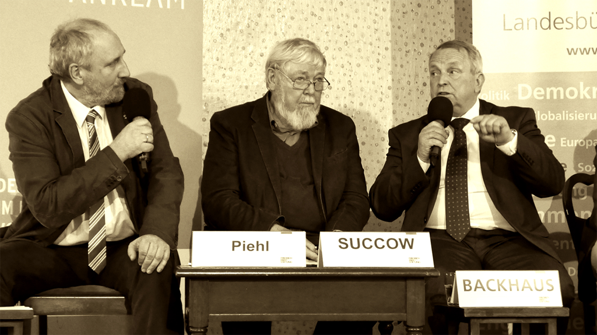

Kulturlandschaft

Quo Vadis, Landwirtschaft in Vorpommern?
„Nicht nur Umweltschützer schlagen Alarm, auch die Wissenschaft belegt es in ihrer neuesten Umweltstudie (Studie „More than 75 percent decline over 27 years in total flying insect biomass in protected areas“): Es liegt etwas in der Luft! Pestizide, Fungizide, Herbizide und Düngemittel bedrohen die Artenvielfalt von Flora und Fauna, die intensive Landwirtschaft mit einem großflächigen Anbau von Monokulturen und Massentierhaltung tun ihr Übriges. Wie sehen Verantwortliche aus Politik und Landwirtschaft, aus Umweltschutz und Wissenschaft die Situation in MecklenburgVorpommern, insbesondere im Landkreis Vorpommern-Greifswald? Bleibt alles, wie es ist, oder gibt es bereits ein Umdenken? Welche Probleme, welche Folgen ergeben sich aus der einen oder der anderen Haltung? Gibt es bereits konkrete Vorhaben? Welche Rolle spielt der großflächige Landerwerb weniger Investoren? Was können wir gemeinsam tun, um die Lebensbedingungen für Menschen, Tiere und Pflanzen in Einklang und auf einen guten, zukunftsfähigen Weg zu bringen? Diskutieren Sie mit unseren Podiumsgästen.“ So stand es auf dem Einladungsflyer mit dem Windrad auf dem Acker für ein Podiumgespräch zur Zukunft der Landwirtschaft in der Region Vorpommern-Greifswald. Der alte Ballsaal in Loitz war überfüllt. Umweltschützer und der Bauernverband haben erfolgreich die Werbetrommel gerührt. Auf dem Podium saß der alternative Nobelpreisträger Succow zwischen seinem Freund Backhaus und dem Geschäftsführer des Bauernverbandes MV. Der betonte in seiner Rede, dass er nicht nur für die konventionellen Bauern spreche. In seinem Verband seien ebenso Bio-Bauern Mitglied. Auf der anderen Seite des Umweltministers saß der geschäftsführende Gesellschafter der biologisch-dynamisch geführten „Landgut am Strelasund GmbH“ Huisman. Der sprach von seinen Projekten in Polen und Afrika davon, wie unter ungünstigen Bedingungen erfolgreich Landwirtschaft praktiziert werden kann... Die auf dem Einladungsflyer benannten bedrohlichen Probleme wurden auf dem Podium sorgsam umgangen. Auf meine Frage, ob Landwirte mit zusätzlichen Einnahmen durch Windkraft auf ihren Feldern nicht auf Spritzmittel verzichten können, antwortete der Umweltminister, es gäbe doch schon Ausgleichsmaßnahmen... und war ruck zuck wieder bei seinem endlosen Anfangsreferat. Auch wenn der Öko-Anteil an der landwirtschaftlich genutzten Fläche in MV bei 10,4 Prozent liegt, gemessen am rasanten Zuwachs der Windeignungsgebiete ist das ein lächerlich kleiner Teil. Beton im Acker versenken bringt einfach mehr Kohle. Wer wissen will wohin sich die Landwirtschaft entwickelt, darf dieses Thema doch nicht einfach ausblenden. In der Abwägungsdokumentation zur zweiten Stufe des Beteiligungsverfahrens zum RREP VP konnte ich lesen: „Der Landkreis VorpommernGreifswald hat bestätigt, dass es sich bei der angrenzenden zur Gemeinde Alt Tellin gehörenden Wohnbebauung des Ortsteils Siedenbüssow um eine Splittersiedlung im Außenbereich handelt.“ Ein unbestimmter Rechtsbegriff, der im Einzelfall auszulegen ist. Meine Nachfrage beim Landkreis ergab, dass der in der dritten Stufe des Beteiligungsverfahrens die Wohnbebauung des Ortsteils Siedenbüssow im Rahmen des § 34 eingestuft hat. Also keine Splittersiedlung sondern Willkür? Was bleibt übrig von der Planungshoheit der Gemeinden, wenn die Verwertungsinteressen der Landbesitzer groß genug sind?